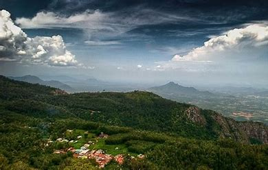
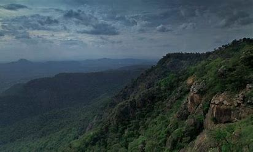

The Servarayan hills, with the anglicised name Shevaroy Hills, are a towering mountain range (1620 m) near the city of Salem, in Tamil Nadu state, southern India. It is one of the major hill stations in Tamil Nadu and in the Eastern Ghats. The Servarayans form part of the southern ranges of the Eastern Ghats System. Shevaroys cover an area of 400 square kilometres (99,000 acres), with plateaus from 4,000–5,000 feet (1,200–1,500 m) above sea-level. The main town here is Yercaud. As earlier stated, it also represents the highest peak in southern part of the Eastern Ghats, with the Solaikaradu peak towering to 1620 m above mean sea-level. It is nestled parallel to the lower Chitteri - Kalrayan hills, just north of the Kolli Hills and Pachaimalai Hills. Westwards, lie the Mettur hills. This range forms an important link in the southern part of Eastern Ghats hill chain.
Shevaroy Hills

| Pachaimalai Hills | |
|---|---|
|  | |
| Highest Peak | |
| Elevation | 1,620 m (5,310 ft) |
| Coordinates | 11°50′0″N 78°16′0″E |
| Geography | |
| Location | India |
| Borders on | Salem, Tamil Nadu, India |